System Programming week 14
JellyFish: A Fast Skip List with MVCC
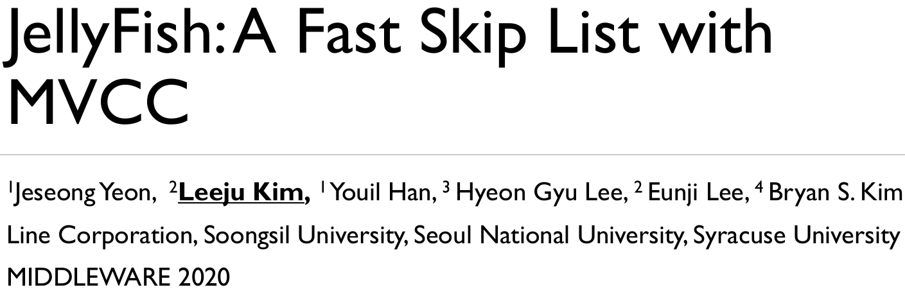
Key-value store grows in popularity
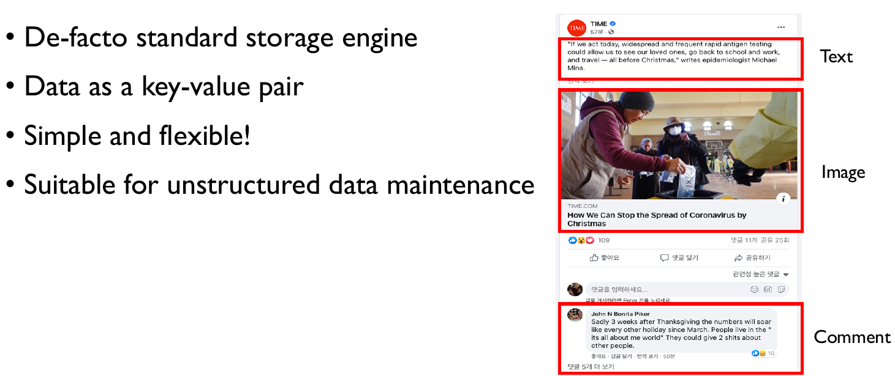
Observation of KVS performance
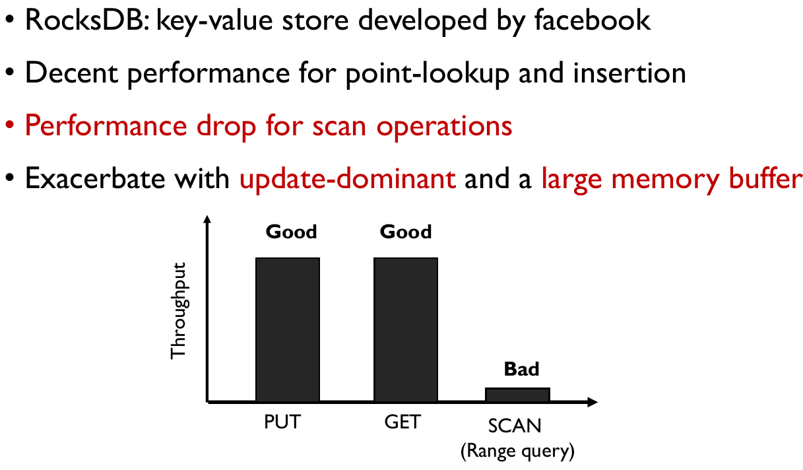
Skip list is a main culprit!
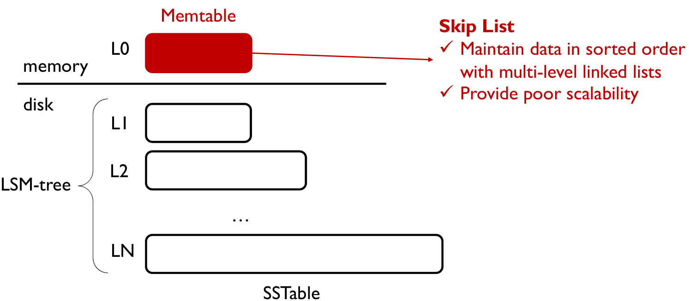
Skip list
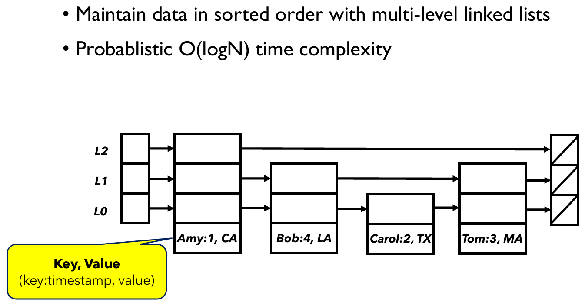
Append-only skip list in KVS
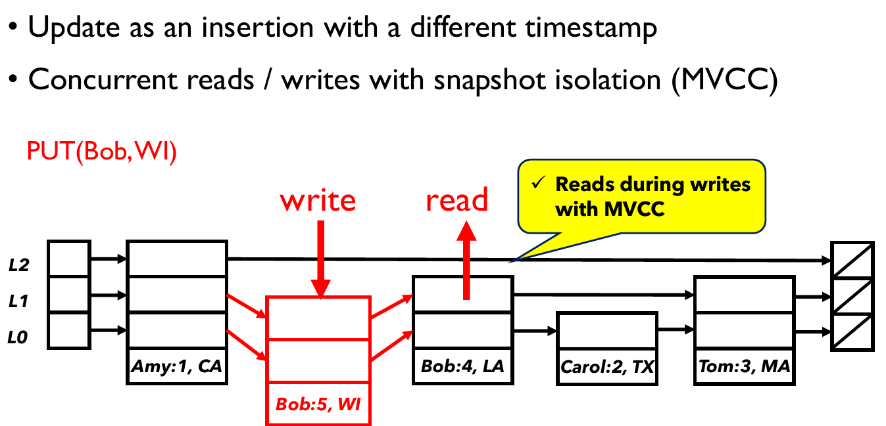
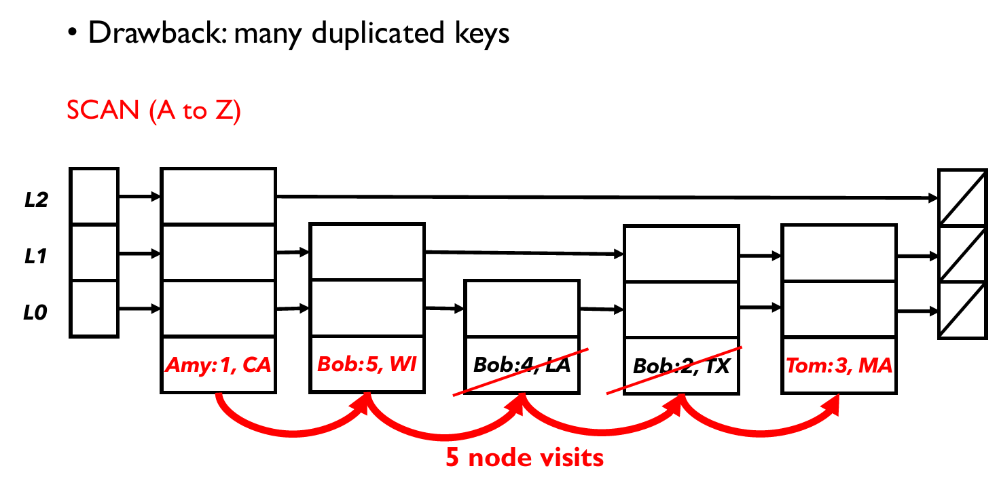
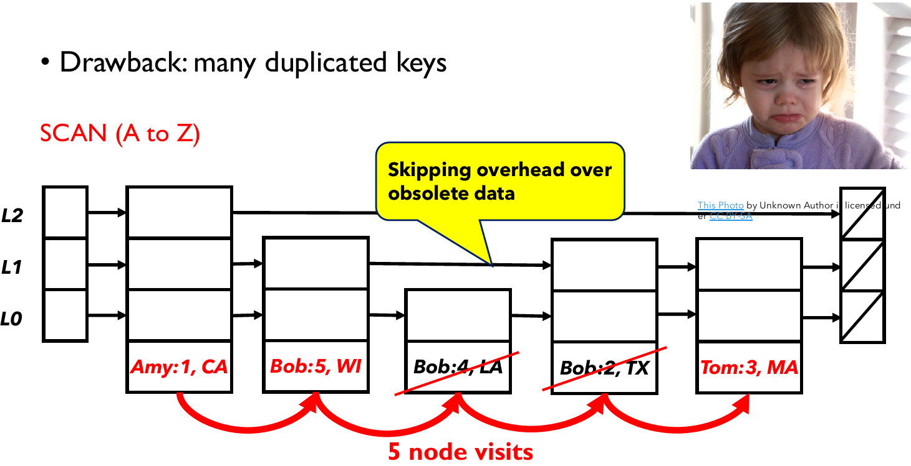
JellyFish: a fast skip list with MVCC
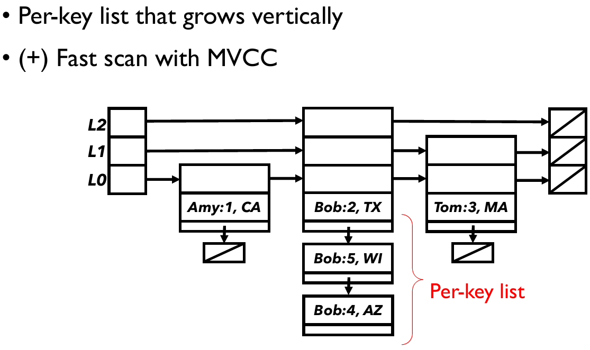
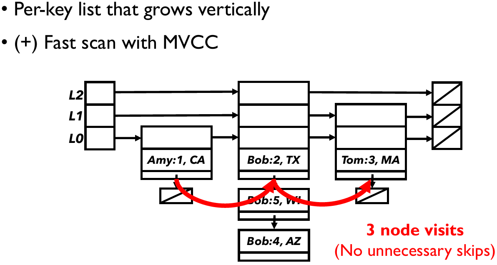
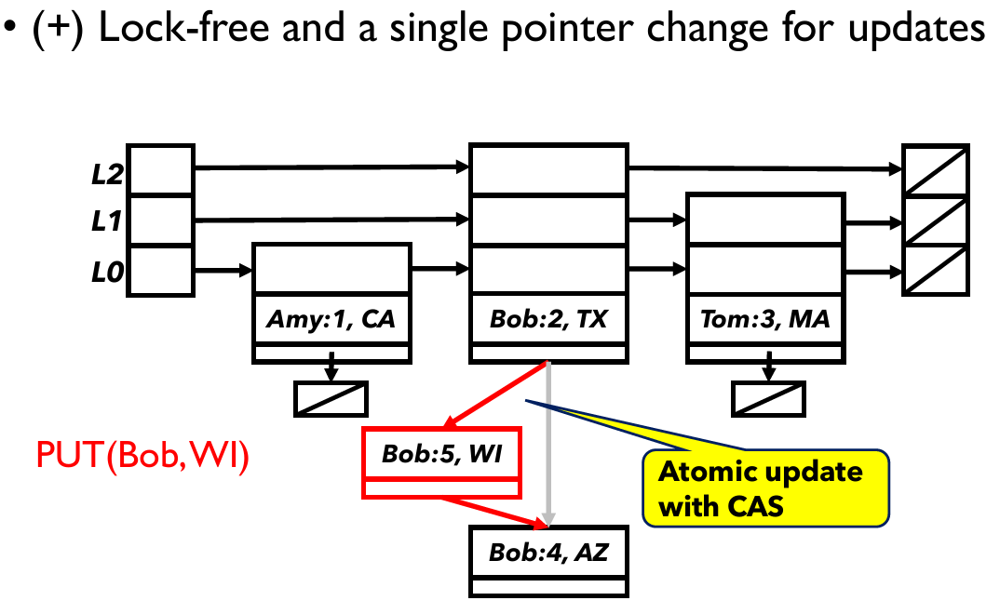
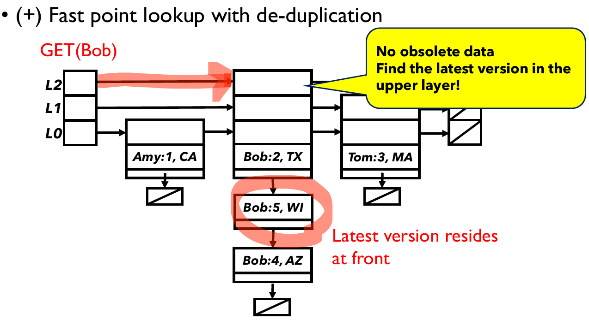
Summary: skip list taxonomy
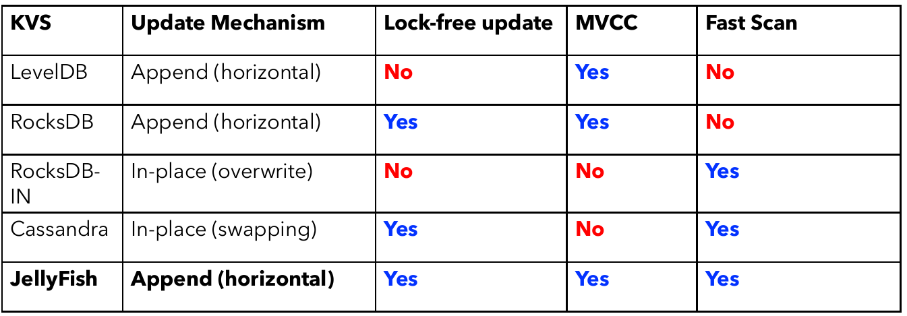
Evaluation
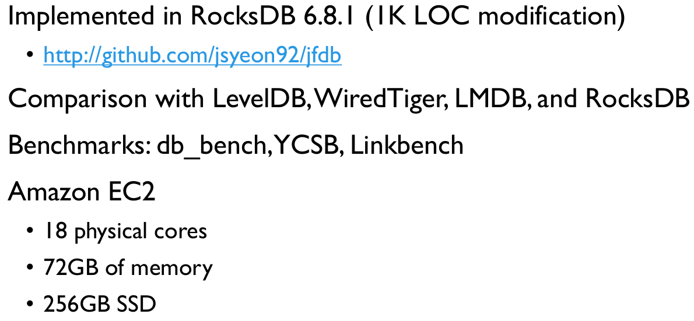
Db_bench results
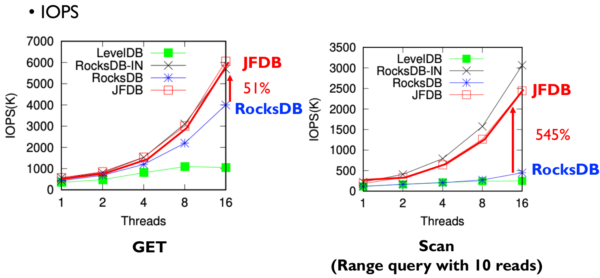
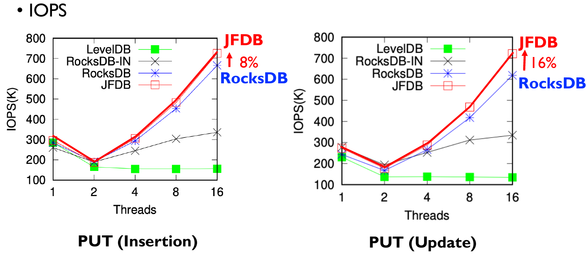
YCSB results
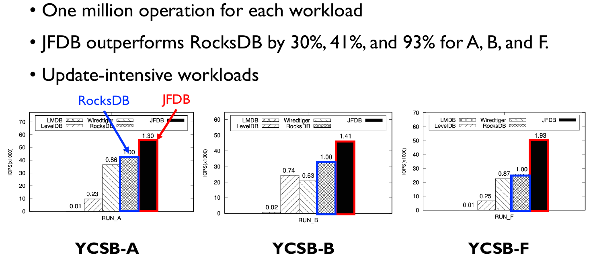
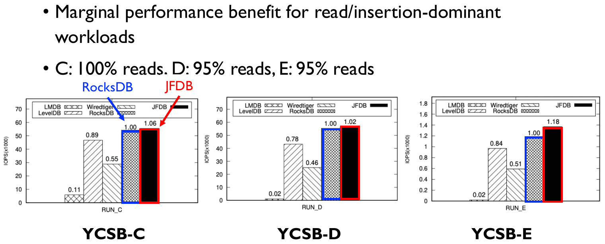
Conclusion
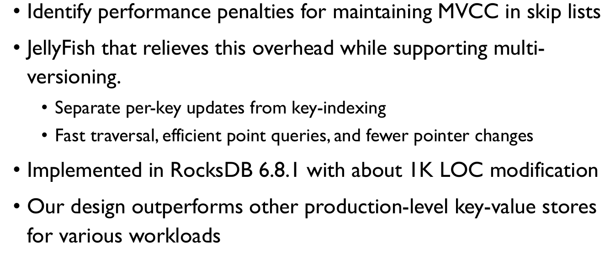
(Back-ups) Lock-free skip list
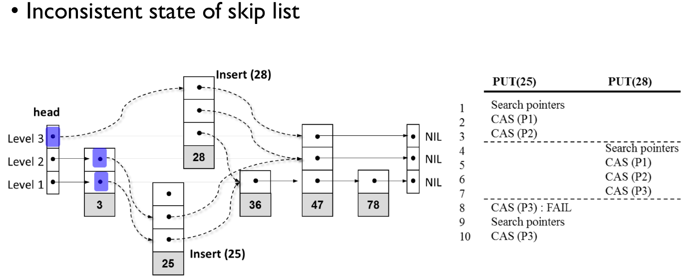
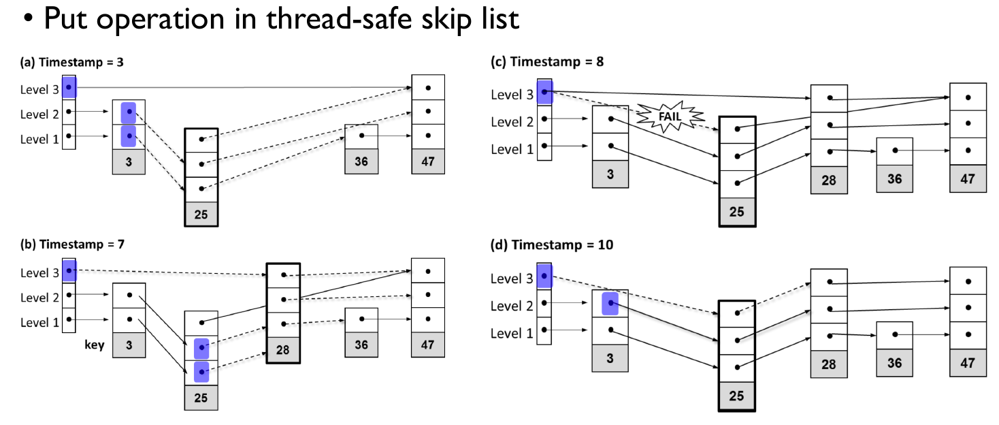